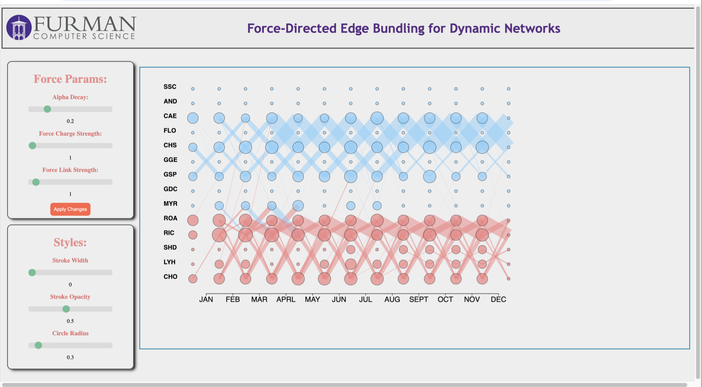

For this project, I studied and re-implemented the algorithm in the academic paper
Force-Directed Edge Bundling for Graph Visualization to be applied in a novel way.
The force directed edge bundling algorithm has only previously applied to static graphs.
For this project the goal was to implement the Force-Directed Edge Bundling algorithm on dynamic
information such as Flight Data.
To show how we can dynamically apply the bundling, I created a visualization using HTML, CSS,
and javascript where the summarization parameters can be adjusted.
The visualization techniques implemented will be applied to future research in summarizing neural
networks and FMRI data.